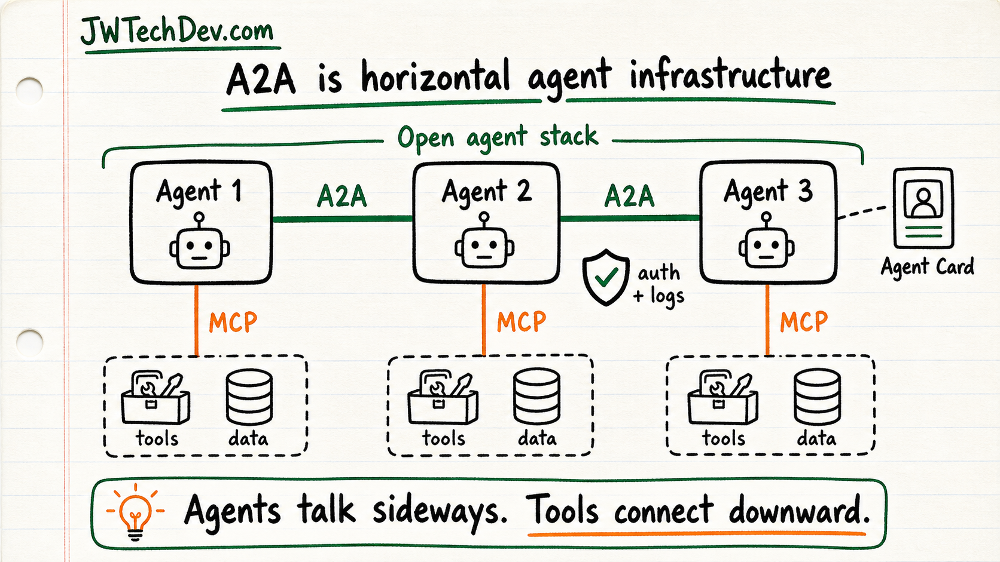

A2A joining the Agentic AI Foundation is a signal that agent collaboration is becoming infrastructure
Agent protocols are starting to look like cloud infrastructure: discovery, delegation, identity, observability, and governance.

Quick answer
A2A joining the Agentic AI Foundation matters because agent collaboration is moving toward open infrastructure. The useful mental model is simple: MCP helps agents connect downward to tools and data. A2A helps agents connect sideways to other agents.
Why this matters
The A2A announcement is not just foundation news. It is a signal that the agent ecosystem is trying to standardize how agents discover each other, describe what they can do, exchange tasks, and coordinate work across vendors and systems.
That matters because real organizations will not run one magic agent. They will run many specialized agents across support, security, data, engineering, operations, and knowledge work. Those agents need a way to cooperate without every integration becoming a custom one-off.
A2A is horizontal. MCP is vertical.
The cleanest way to explain it is direction.
MCP is mostly vertical: an agent reaches downward into tools, files, APIs, databases, search indexes, and internal systems.
A2A is horizontal: one agent can talk to another agent, delegate a task, discover capabilities, and coordinate work across agent boundaries.
You need both ideas if you want agent systems to become real infrastructure instead of isolated demos.
Agent cards are the interesting part
One of the most useful ideas in A2A is the agent card: a machine-readable description of what an agent can do and how another agent can interact with it.
That matters for the same reason service discovery matters in normal distributed systems. Before systems can cooperate safely, they need a shared way to describe capabilities, endpoints, protocols, authentication expectations, and task formats.
The last-week pattern
This also fits the broader agent infrastructure pattern from the last week of news and docs. AWS has been writing about AgentCore, MCP gateway support, async agent pipelines, tool-call guardrails, agent payments, and graduated autonomy.
The pattern is consistent: the industry is moving from model demos toward operating systems around agents. That means gateways, policies, tracing, approvals, durable workflows, payment limits, and identity boundaries.
What builders should learn
Do not only learn prompts. Learn how agents are connected, identified, governed, and observed.
A practical learning path is: understand MCP for tool access, understand A2A for agent collaboration, understand IAM for authorization, understand workflow orchestration for long-running tasks, and understand logs/traces for debugging.
That stack is where agent work becomes maintainable.
The risk to watch
Open protocols do not remove governance. They make governance more important.
If agents can discover other agents, delegate tasks, and call tools across boundaries, teams need stronger authentication, authorization, allowlists, audit logs, and approval gates. Standardization helps interoperability, but it also raises the bar for security design.
Bottom line
A2A joining the Agentic AI Foundation is a useful signal: agent collaboration is becoming a shared infrastructure problem.
The future is not one giant chatbot. It is many agents, many tools, many permissions, and a control plane that decides what should happen next.
Sources checked
- A2A Protocol: A New Chapter for A2A, Joining the Agentic AI Foundation
- A2A Protocol: What is A2A?
- Agentic AI Foundation
- AWS: How AgentCore Gateway supports the MCP 2026-07-28 spec
- AWS: Extend Amazon Bedrock Guardrails to Tool Interactions Using the Strands Agents SDK
- AWS: Asynchronous patterns for calling Amazon Bedrock AgentCore agents in serverless pipelines
Want the starter kit?
Grab the free JWTechDev.com starter kit if you want a practical way to connect cloud basics, AI workflows, and approval gates.
Get resources